La fotocamera corregge la mano
Impara l’alfabeto manuale della LIS lettera per lettera: la fotocamera frontale guarda la tua mano e ti dice subito se è giusta e quale dito cambiare.
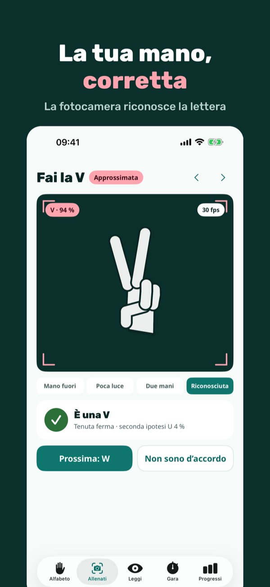
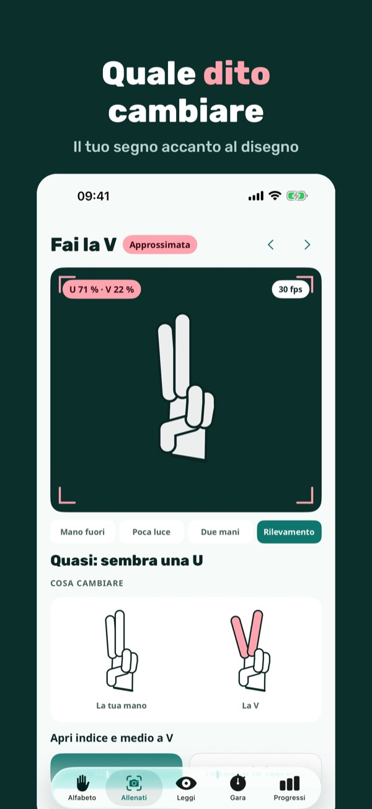
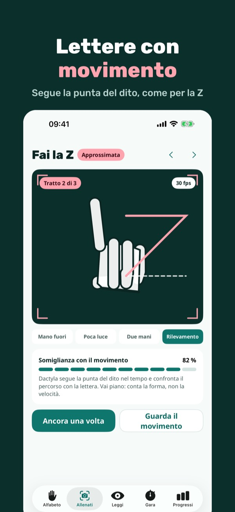
Dactyla ti allena sull’alfabeto manuale, la parte della lingua dei segni che serve per nomi, città e parole senza segno. Scegli il tuo alfabeto e la mano dominante, guarda il disegno della lettera e falla davanti alla fotocamera frontale: Dactyla riconosce la forma della mano e ti mostra cosa cambiare.
Le prime 8 lettere del tuo alfabeto, con lezione e fotocamera, 5 minuti di fotocamera al giorno e 3 parole al giorno in lettura si usano senza acquisto. Dactyla Plus è un acquisto unico: tutte le lettere, fotocamera senza limite, gara di velocità, lettura senza limite e le tue parole nelle gare. Nessun abbonamento.
Ogni lettera ha le sue fonti. Le lettere descritte solo in parte dalle fonti sono segnate come «approssimative»; quelle non ancora confermate non sono incluse. Dactyla insegna l’alfabeto manuale, una parte della lingua dei segni: non insegna la LIS intera e non sostituisce i corsi con insegnanti sordi. Il riconoscimento è un suggerimento e può sbagliare. I disegni sono nostri.
Terms of Use (EULA): https://www.apple.com/legal/internet-services/itunes/dev/stdeula/
Privacy: https://baytechbv.github.io/privacy/dactyla-eu/
Kamera poprawia układ dłoni
Ucz się alfabetu palcowego PJM litera po literze: przednia kamera patrzy na Twoją dłoń i od razu mówi, czy jest dobrze i który palec poprawić.
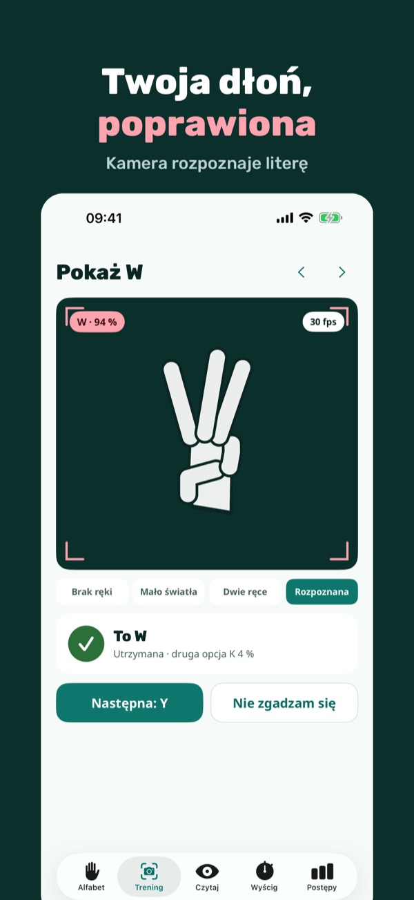
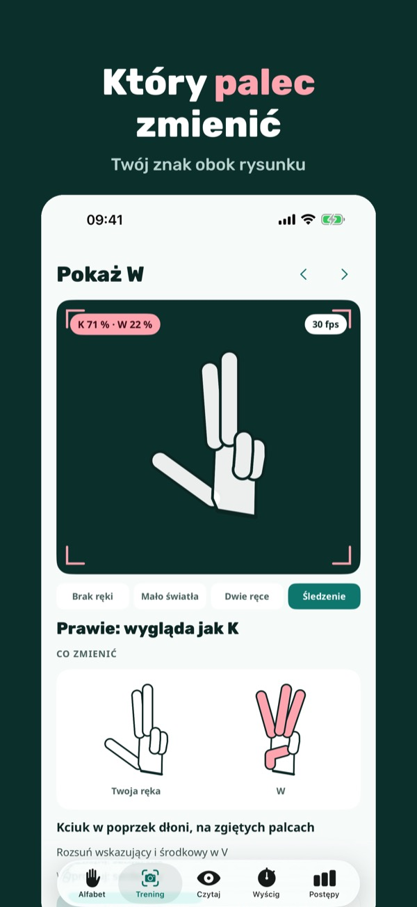
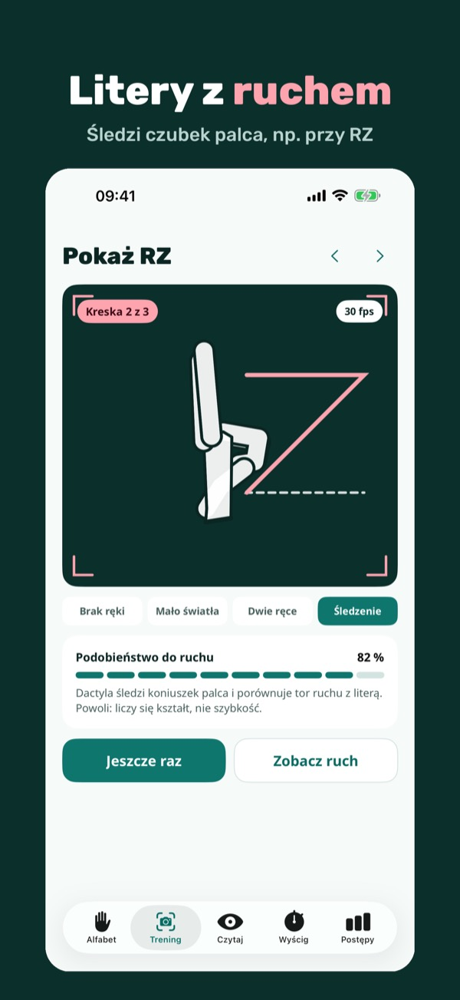
Dactyla to trening alfabetu palcowego – części języka migowego, której używa się do imion, miast i słów bez znaku. Wybierz swój alfabet i dominującą rękę, zobacz rysunek litery i pokaż ją przedniej kamerze: Dactyla rozpoznaje układ dłoni i pokazuje, co zmienić.
Pierwsze 8 liter Twojego alfabetu z lekcją i kamerą, 5 minut kamery dziennie i 3 słowa dziennie w czytaniu działają bez zakupu. Dactyla Plus to jednorazowy zakup: wszystkie litery, kamera bez limitu, wyścig na czas, czytanie bez limitu i własne słowa w wyścigach. Bez subskrypcji.
Każda litera ma podane źródła. Litery opisane w źródłach tylko częściowo są oznaczone jako „przybliżone”. Dactyla uczy alfabetu palcowego, czyli części języka migowego: nie uczy całego PJM i nie zastępuje kursów z głuchymi nauczycielami. Rozpoznawanie jest podpowiedzią i może się mylić. Rysunki są nasze.
Terms of Use (EULA): https://www.apple.com/legal/internet-services/itunes/dev/stdeula/
Privacy: https://baytechbv.github.io/privacy/dactyla-eu/
La cámara corrige tu mano
Aprende el alfabeto dactilológico de la LSE letra a letra: la cámara frontal mira tu mano y te dice al momento si está bien y qué dedo cambiar.
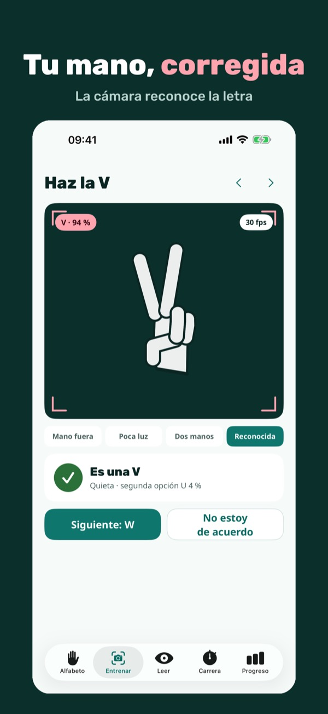
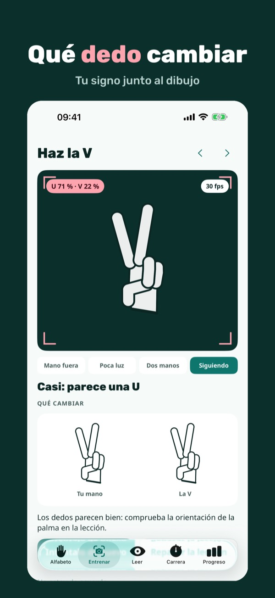
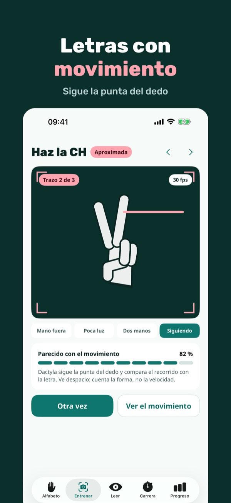
Dactyla te entrena en el alfabeto dactilológico, la parte de la lengua de signos que se usa para nombres, ciudades y palabras sin signo. Elige tu alfabeto y tu mano dominante, mira el dibujo de la letra y hazla ante la cámara frontal: Dactyla reconoce la forma de la mano y te muestra qué cambiar.
Las 8 primeras letras de tu alfabeto, con lección y cámara, 5 minutos de cámara al día y 3 palabras al día de lectura se usan sin compra. Dactyla Plus es una compra única: todas las letras, cámara sin límite, carrera de velocidad, lectura sin límite y tus palabras en las carreras. Sin suscripción.
Cada letra indica sus fuentes. Las letras que las fuentes describen solo en parte están marcadas como «aproximadas»; las que aún no están confirmadas no se incluyen. Dactyla enseña el alfabeto dactilológico, una parte de la lengua de signos: no enseña la LSE completa ni sustituye los cursos con profesores sordos. El reconocimiento es una sugerencia y puede equivocarse. Los dibujos son nuestros.
Terms of Use (EULA): https://www.apple.com/legal/internet-services/itunes/dev/stdeula/
Privacy: https://baytechbv.github.io/privacy/dactyla-eu/
Die Kamera korrigiert die Hand
Lerne das Fingeralphabet der DGS Buchstabe für Buchstabe: Die Frontkamera sieht deine Hand und sagt dir sofort, ob es stimmt und welchen Finger du änderst.
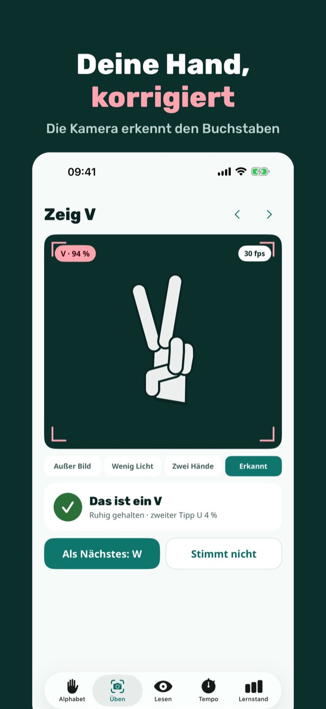
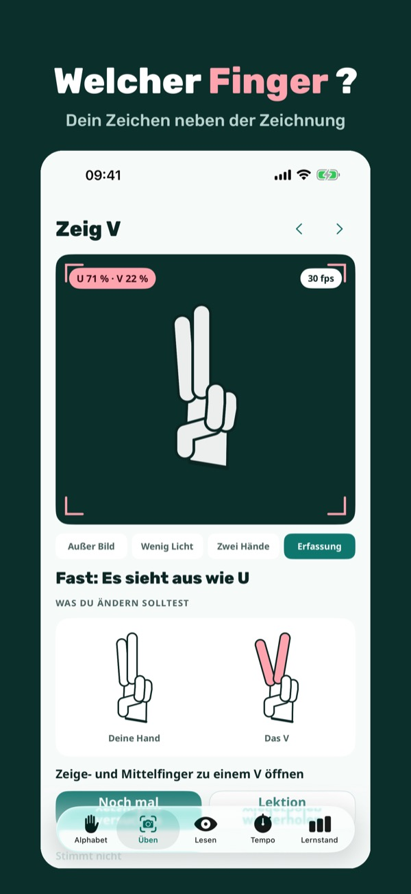
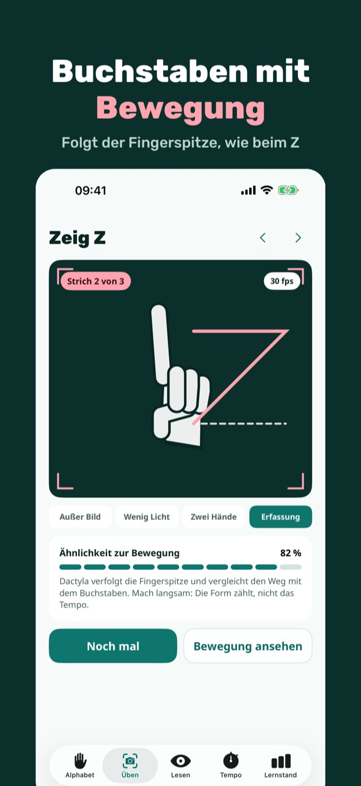
Dactyla trainiert das Fingeralphabet – den Teil der Gebärdensprache, mit dem man Namen, Orte und Wörter ohne Gebärde buchstabiert. Wähle dein Alphabet und deine Haupthand, sieh dir die Zeichnung des Buchstabens an und zeige ihn der Frontkamera: Dactyla erkennt die Handform und zeigt, was du ändern kannst.
Die ersten 8 Buchstaben deines Alphabets mit Lektion und Kamera, 5 Minuten Kamera am Tag und 3 Wörter am Tag beim Lesen gehen ohne Kauf. Dactyla Plus ist ein Einmalkauf: alle Buchstaben, Kamera ohne Zeitlimit, Tempo-Training, Lesen ohne Limit und eigene Wörter im Tempo-Training. Kein Abo.
Jeder Buchstabe nennt seine Quellen; nur teilweise beschriebene Buchstaben sind als „ungefähr“ markiert. Dactyla übt das Fingeralphabet, einen Teil der Gebärdensprache: Es lehrt nicht die ganze DGS und ersetzt keine Kurse mit gehörlosen Lehrkräften. Das Fingeralphabet der ÖGS unterscheidet sich und ist noch nicht enthalten. Die Erkennung ist ein Vorschlag und kann sich irren. Die Zeichnungen sind von uns.
Terms of Use (EULA): https://www.apple.com/legal/internet-services/itunes/dev/stdeula/
Privacy: https://baytechbv.github.io/privacy/dactyla-eu/
De camera verbetert je hand
Leer het vingeralfabet van de NGT letter voor letter: de voorcamera kijkt naar je hand en zegt meteen of het klopt en welke vinger je verandert.
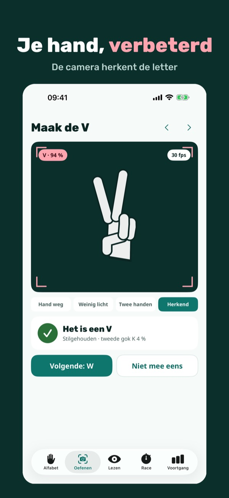
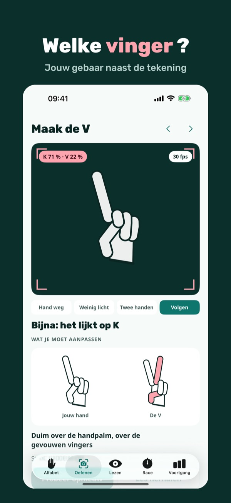
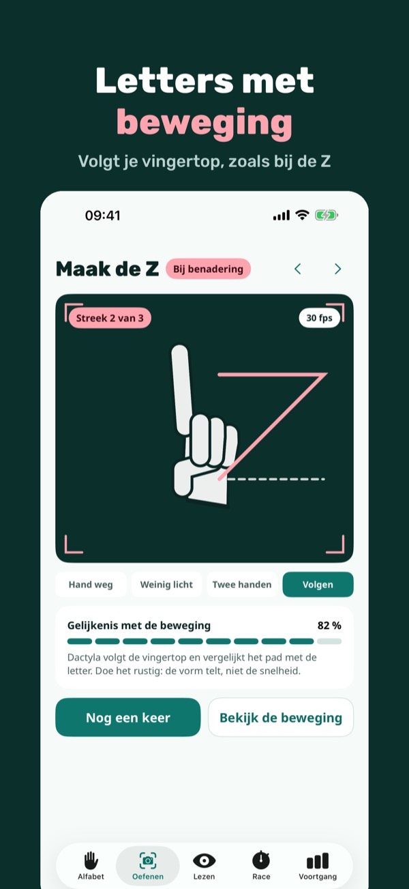
Dactyla traint het vingeralfabet – het deel van de gebarentaal waarmee je namen, plaatsen en woorden zonder gebaar spelt. Kies je alfabet en je voorkeurshand, bekijk de tekening van de letter en laat hem aan de voorcamera zien: Dactyla herkent de handvorm en laat zien wat je kunt veranderen.
De eerste 8 letters van je alfabet met les en camera, 5 minuten camera per dag en 3 woorden per dag lezen werken zonder aankoop. Dactyla Plus is een eenmalige aankoop: alle letters, camera zonder tijdslimiet, snelheidstraining, onbeperkt lezen en eigen woorden in de race. Geen abonnement.
Elke letter noemt zijn bronnen. Letters die de bronnen maar deels beschrijven zijn gemarkeerd als ‘bij benadering’; letters die nog niet bevestigd zijn, zitten er niet in. Dactyla oefent het vingeralfabet, een deel van de gebarentaal: het leert je niet de hele NGT en vervangt geen cursussen met dove docenten. De herkenning is een suggestie en kan fout zijn. De tekeningen zijn van ons.
Terms of Use (EULA): https://www.apple.com/legal/internet-services/itunes/dev/stdeula/
Privacy: https://baytechbv.github.io/privacy/dactyla-eu/